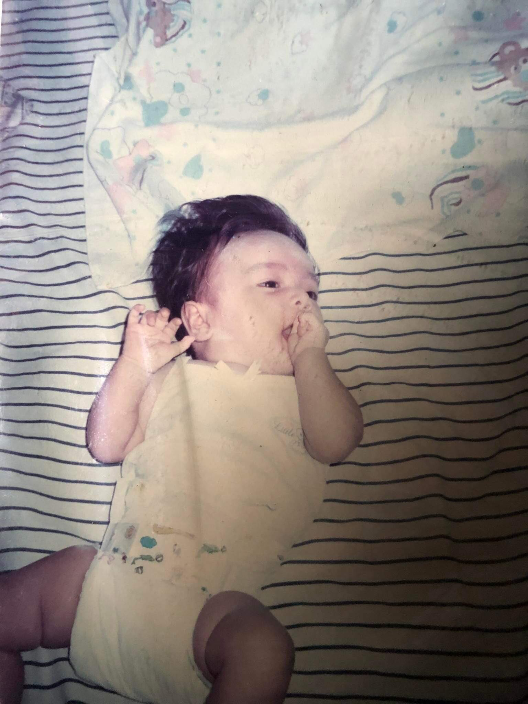

My birthday is September 30, and I was born in the year 2002. My mother had my big sister before me. I remember my mother had touched the dead rat, she got scared and had a panic attack that’s why my mother went into labor and that day I was born.
I know you'll be back soon,
Allyssa